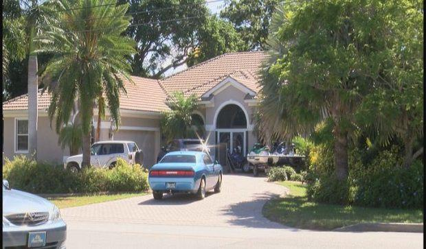

Deputies find drugs, arrest bloody home invasion victim
Woman found tied up and in possession of illegal drugs in this River Oaks Landing area home
By Joseph Poser – Contact Reporter
Staff Writer
July 5, 2016, 8:44 AM
Deputies found a resident tied up and bloody inside her River Oaks Landing home early this morning and then arrested her on drug charges, reports say.
Julia Howser, 24, was bound and sitting on a couch when deputies forced their way into her house on 5670 Rouse Rd just before 1 a.m., according the Orange County Sheriff's Office.
By Joseph Poser – Contact ReporterDeputies responded there to reports of a man being held at gunpoint outside the house. They found a "large" pool of blood and then made entry to "check the well being of those inside," an arrest report states.
Deputies found Howser and immediately started emergency medical treatment, while others checked the home for any suspects. That's when they said they noticed marijuana, a scale, baggies and other drug paraphernalia in "plain view" in the living room, according to the report.
Howser was being held at a local hospital for treatment before being booked into the Orange County Jail. She is facing charges of possession of marijuana with intent to sell and possession of drug paraphernalia.